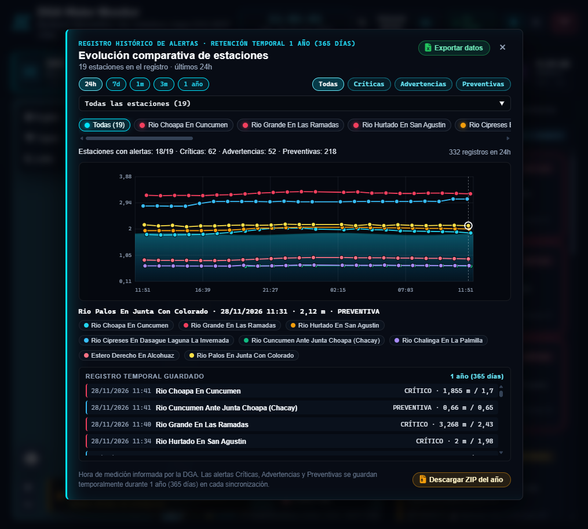

Manual de Usuario y Guía Técnica
DGA Water Monitor
Sistema de Monitoreo Hidrológico y Alertas en Tiempo Real
Guía integral de operación, arquitectura, visualización geoespacial, exportación de datos y telemetría de caudales y ríos de Chile.
Versión del Sistema: v3.1.0
Autor / Repositorio: FitoCL / dga-water-monitor
Fuente Oficial: Dirección General de Aguas (DGA - MOP Chile)
Fecha de Publicación: Noviembre 2026
Aviso Importante: Esta plataforma es una herramienta informativa basada en datos abiertos de la Dirección General de Aguas (DGA). No sustituye las alertas ni decretos oficiales emitidos por SENAPRED ni los organismos de emergencia competentes.
1. Introducción y Propósito
DGA Water Monitor es una aplicación web especializada en telemetría hidrológica en tiempo real, diseñada para proporcionar supervisión operativa de ríos, estaciones fluviométricas y embalses en las 16 regiones de Chile. La plataforma procesa flujos de datos continuos desde los servicios públicos de la DGA y cartografía de precisión del Ministerio de Obras Públicas (MOP), traduciendo variables hidráulicas complejas en una interfaz interactiva de alta visibilidad (estilo Obsidian HUD).
1.1 Características Clave
- Cobertura Nacional: Monitoreo de más de 580 estaciones activas con registro oficial y seguimiento de los 11 principales embalses del país.
- Alertas en Tiempo Real: Clasificación instantánea por severidad: Crítica (Roja), Advertencia (Amarilla) y Preventiva (Azul).
- Red Hidrográfica Oficial: Trazado vectorial 1:250.000 de ríos en alerta, con segmentación cromática aguas abajo y corte automático en estaciones normales.
- Registro Histórico Prolongado: Almacenamiento continuo con retención de hasta 1 año (365 días), visualización de evolución en gráficos SVG y exportación a planillas Excel (.xlsx).
- Respaldos Automáticos ZIP: Compresión anual de históricos en formato ZIP con integridad de datos garantizada.

Figura 1: Vista general panorámica del panel de control de DGA Water Monitor.
2. Manual de Operación de la Interfaz
2.1 Barra Superior y Reloj Oficial
En la cabecera del sistema se ubica el título, el botón de acceso al Historial de alertas (con contador dinámico de estaciones con registros), el selector de volumen/sonido y el Reloj Oficial de Chile continental (America/Santiago). Este reloj garantiza la sincronización visual exacta con los horarios de medición emitidos por las estaciones telemétricas.
2.2 Tarjetas KPI Dinámicas
El panel superior cuenta con 7 métricas clave que se recalculan en tiempo real:
| Métrica KPI |
Descripción |
Acción Interactiva |
| Ríos activos |
Total de estaciones fluviométricas operativas con transmisión. |
Filtra el mapa y lista para visualizar únicamente puntos con datos vigentes. |
| Inactivas / Sin registro |
Estaciones en catastro sin transmisión telemétrica reciente. |
Permite auditar estaciones fuera de servicio o de lectura manual. |
| Embalses y lagos |
Infraestructura de acumulación con reporte de nivel y volumen. |
Aísla los embalses en el mapa mostrando porcentaje de capacidad. |
| Críticas / Advertencias / Prev. |
Contadores segregados de estaciones que superan umbrales de alerta. |
Al hacer clic en una tarjeta de alerta, el mapa muestra con exclusividad ese nivel de severidad. |
| Última sincronización |
Hora exacta de la última consulta contra la API oficial DGA. |
Permanece fija indicando la frescura del dato (ciclo automático cada 60 s). |
2.3 Mapa Interactivo y Red Hidrográfica
El visor geográfico utiliza la tecnología Leaflet optimizada con capas vectoriales y mosaicos oscuros (CartoDB Dark Matter), satelitales y topográficos.
- Destacado de Cauces: Los tramos fluviales asociados a estaciones en alerta se iluminan con polilíneas animadas siguiendo el curso natural del río. Si aguas abajo existe una estación en nivel normal, el resaltado se interrumpe de forma precisa en dicho punto.
- Marcadores Inteligentes: Cada icono refleja el estado del río (pulsante en rojo para críticos, ámbar para advertencias y azul para preventivas).
- Buscador Global: Permite localizar cualquier cauce o código BNA por teclado (↑ / ↓ / Enter).
3. Registro Histórico, Exportación y Respaldos
3.1 Visualización y Filtros Temporales
Al pulsar sobre Historial alertas o el botón Evolución en una estación, se abre el modal de telemetría histórica. Permite alternar entre los siguientes intervalos de retención temporal:
- 24h: Evolución horaria de las últimas 24 horas (vista por defecto).
- 7d: Tendencia semanal de caudales y niveles.
- 1m: Comportamiento a 30 días.
- 3m: Historial trimestral (90 días).
- 1 año: Registro acumulado de 365 días continuos.
3.2 Exportación Nativa a Planilla Excel (.xlsx)
En la esquina superior derecha del modal se encuentra el botón verde Exportar datos. Al pulsarlo:
- El servidor compila en memoria un libro .xlsx nativo con formato estándar internacional.
- Hoja 1 ("Registros de Alertas"): Detalla cada medición con Fecha/Hora en formato chileno (DD/MM/YYYY HH:MM:SS), Código BNA, Estación, Tipo de sensor, Nivel, Valor medido, Umbral, Diferencia y Fecha de Sincronización.
- Hoja 2 ("Resumen Estaciones"): Métricas consolidadas (Mínimo, Máximo, Conteos por severidad y última lectura).
- La descarga se inicia automáticamente en el navegador sin intermediarios.
3.3 Descarga de Respaldo Anual en ZIP
En la esquina inferior derecha del pie del modal se ubica el botón Descargar ZIP del año. Este mecanismo empaqueta el libro Excel anual dentro de un archivo comprimido alerts_history_<año>.zip, ideal para archivado institucional y análisis retrospectivo.
4. Notificaciones y Sensores de Medición
4.1 Identificación Técnica de Sensores
Tanto en las fichas emergentes del mapa como en el modal de detalle se especifica el instrumento de medición oficial:
- Limnímetro / Sensor de Nivel: Reporta altura de agua en metros (m) con respecto a la cota cero de la estación.
- Caudalímetro / Aforo Fluviométrico: Reporta gasto volumétrico en metros cúbicos por segundo (m³/s).
4.2 Notificaciones en Segundo Plano
El sistema cuenta con integración con la Notification API del navegador. El servicio de polling continúa activo en segundo plano, despachando alertas sonoras y notificaciones emergentes de escritorio ante eventos críticos o variaciones de nivel, incluso con la pestaña minimizada.
5. Arquitectura Técnica y Stack Tecnológico
La aplicación sigue las directrices de diseño de la skill python-hud-api-stack, garantizando alta resiliencia, bajo consumo de recursos y total independencia de gestores de paquetes JavaScript (cero dependencias de Node.js, Webpack o Vite).
| Componente |
Tecnología |
Rol y Responsabilidad |
| Servidor WSGI |
Waitress 3.0+ |
Servidor de producción multiproceso (8 hilos) sin banners de servidor (ident=None). |
| Framework Web |
Python Flask 3.1+ |
Enrutamiento REST, cabeceras de seguridad CSP, protección anti-CSRF y límites estrictos de payload. |
| Cliente HTTP |
Requests + urllib3 |
Conexión con ArcGIS MOP mediante sesiones persistentes, backoff exponencial y TLS estricto. |
| Persistencia |
JSON Atómico |
Escritura segura en disco con exclusión mutua (_FILE_WRITE_LOCK) y reemplazo atómico (os.replace). |
| Frontend |
Vanilla JS (ES6+) |
Construcción segura del árbol DOM (sin innerHTML sin sanitizar) y manipulación asíncrona. |
| Motor de Audio |
Web Audio API |
Síntesis de osciladores para alarmas y tonos sin necesidad de cargar archivos MP3/WAV externos. |
5.1 Puntos de Entrada API (Endpoints)
- GET /api/summary: Resumen global de métricas KPI y estado del sistema.
- GET /api/estaciones?region=...: Catálogo de estaciones filtradas por región geográfica.
- GET /api/alertas: Listado ordenado de alertas oficiales activas.
- GET /api/alertas/cauces: Geometrías GeoJSON de tramos de ríos en alerta.
- GET /api/alertas/historial: Puntos temporales y evolución para gráficos SVG.
- GET /api/alertas/historial/export: Descarga directa de planilla Excel (.xlsx).
- GET /api/alertas/historial/archivo-zip: Descarga de archivo comprimido (.zip) con el histórico anual.
- POST /api/sync: Sincronización manual forzada (con cooldown anti-saturación).
6. Despliegue y Ejecución
Para ejecutar la solución en un entorno local o de servidor:
- Instalar dependencias: pip install -r requirements.txt
- Iniciar servidor: python app.py
- Acceder en el navegador: http://127.0.0.1:5000
Configuración de Producción: Mediante las variables de entorno DGA_HOST=0.0.0.0, DGA_PORT=5000 y DGA_ADMIN_TOKEN se puede exponer el servicio a la red interna con control de acceso administrativo.